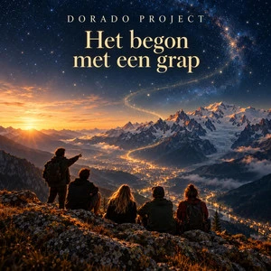

← Alle releases

SINGLE · OP SPOTIFY
Het begon als een grap
Gesproken verhaal / Muziek
Het verhaal achter Dorado Project: wat begon als een grap tijdens een reis met vrienden naar Chamonix, groeide uit tot een muziekproject vol experimenten en nieuwe ideeën.
Luister op Spotify →
Van grap naar Dorado Project
Het begon met Chamonix 2712: een nummer om vrienden wakker te maken tijdens een verblijf in Chamonix. Om het via Sonos af te spelen kwam Spotify in beeld. Het experiment groeide uit tot een eigen website, tientallen nummers en twee Halloween-albums. Nieuwsgierigheid naar muziek, AI en de toekomst bleef de drijfveer.
Meer van Dorado Project
Van synthpop tot rock: ontdek de andere nummers en het verhaal achter Dorado Project.
Bekijk alle nummers →